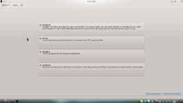
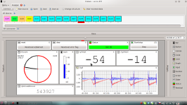
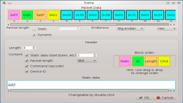
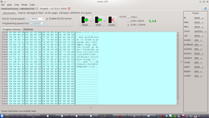
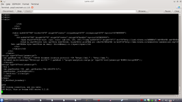
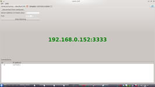

Lorris
Grafické rozhraní napsané v Qt určené pro práci s embedded zařízeními, roboty a podobnými aplikacemi.
Ke stažení
Předkompilované binárky jsou dostupné zatím jen pro windows, pokud používáte jiný OS, musíte si Lorris zkompilovat sami.
Windows
Stabilní vydání - žádná stabilní verze ještě není k dispozici Testovací verze - testovací verze jsou ke stažení na GitHubu
Zdrojový kód
Github repozitář je na https://github.com/Tasssadar/Lorris, k naklonování můžete použít následující příkaz:
git clone git://github.com/Tasssadar/Lorris.git
Nejnovější změny jsou ve větvi "master", jakmile bude vydaná první stabilní verze, bude ve větvi "stable".
Github umožňuje stažení celého stromu jako .zip nebo .tar.gz archiv na adrese https://github.com/Tasssadar/Lorris/downloads.
Popis
Lorris je navrhnut jako modulární aplikace - poskytuje pouze připojení k danému zařízení, moduly se starají o vše ostatní. Můžete pracovat s více moduly zaráz (dokonce i se stejným portem/adresou/...) jako se záložkami ve webovém prohlížeči.
Lorris je napsaný v C++ a využívá Qt Framework (4.7), což (mimo jiné) znamen že dokáže běžet na více platformách -
je otestovaný na Debian Linux(Wheezy, 64bit) a MS Windows (Xp, 7).
Předkompilované binárky si můžete stáhnou v sekci ke stažení.
- Sériový port
- TCP Socket
- Shupito Tunel - vysvětleno zde
- Bez připojení (načíst data ze souboru)
Modul: Analyzér
Podporovaná připojení: Sériový Port, TCP socket, Bez připojení (načíst data ze souboru)Tento modul je grafický parser příchozích dat. Parsovaná data zobrazuje ve widgetech, které si zvolí uživatel. Očekává se, že příchozí data budou mít formát packetů, nejlépe s nějákou hlavičkou. Přesná struktura packetu se nastavuje v tomto okně.
{kind=link}
(Obrázek řekne víc než tisíc slov, podívejte se na tento screenshot
abyste věděli o čem mluvím)
Jakmile nastavíte strukturu packetu, můžete natahat na hlavni pracovní plochu widgety z pravého sloupce.
Data k widgetu přiřadíte přetažením (prvního) bytu dat z horního seznamu dat na widget.
Každý widget má individuální nastavení přistupná po pravém kliknutí.
{kind=link}
- Číslo
- Sloupec
- Barva - očekává tří uint8 jako RGB
- Graf
Widgety, strukturu a data lze také uložit do souboru, abyste pokaždé nemuseli nastavovat vše od začátku.
Modul: Proxy mezi Sériovým portem a TCP Socketem
Podporovaná připojení: Sériový PortTohle je jednoduchá proxy mezi sériovým portem a TCP socketem. K této proxy se můžete přes internet připojit pomocí Lorris nebo jiného programu.
Modul: Shupito
Podporovaná připojení: Sériový Port, TCP socketRozhraní pro obsluhu programátoru (hlavně) mikročipů Shupito. Lorris umí číst pamět čipu, programovat ho a programovat a číst pojistky.
- SPI
- PDI
- Texas Instrument's CC25xx RF-enabled processors
Lorris umí také využít RS232 tunel, který umí Shupito poskytnout. Když tento tunel zapnete (screenshot, vlevo nahoře), vytvoří se nový typ připojení - "Shupito tunel". Je to v podstatě sériový port, a chová se tak, takže ho mohou využít všechny moduly které podporují připojení přes sériový port.
{kind=link}
Modul: Terminál
Podporovaná připojení: Sériový Port, TCP socketProstě terminál. Zobrazuje příchozí data buďto jako normální test (a podporuje \f, \r, \n a \b znaky) nebo jako hex dump (přepínání je v horním menu pod položkou "Formát").
- Poslat každé stisknutí - hned po stisknutí klávesy pošle znak do zařízení
- Jako TCP terminál - ukazuje co píšete v terminálu a pošlě to až po stisknutí enteru
Jak kompilovat
Budete potřebovat QtFramework 4.7 (4.6 by taky mohl fungovat, ale není to vyzkoušené).Zkompilované binárky by měly být ve složce bin/debug nebo bin/release.
Windows
Stáhněte Lorris, otevřete Lorris.pro v QtCreatoru a stiskněte "Sestavit".
Linux
Lorris vyžaduje libqwt-dev alespoň ve verzi 6. Pokud ve vaší distribuci je, prostě ho nainstalujte. Pokud není, ve složce dep/qwt/lib jsou předkompilované libqwt.so* a libqwtmathml.so* pro 64bit, můžete je zkusit dát do lib složky vaší distribuce, eg. /usr/lib.
Pokud máte 32bit jděte do složky dep/qextserialport a zkompiluje QExtSerialPort knihovnu:
qmake qextserialport.pro
make clean
make
Teď můžete zkompilovat Lorris v QtCreatoru nebo následujícími příkazy:
qmake Lorris.pro
make
Licence & knihovny
Lorris je vydaný pod GNU GPLv3 licencí a používá tyto knihovny:
- Qt Framework (http://qt.nokia.com/), the cross-platform application and UI framework,
který je vydaný pod GNU LGPL v2.1 - Qwt (http://qwt.sourceforge.net/), Qt Widgets for Technical Applications,
která je vydaná pod Qwt licencí - dep/qwt/COPYING - QExtSerialPort (http://code.google.com/p/qextserialport/),
Qt interface class for old fashioned serial ports,
která je vydaná pod New BSD Licencí - http://www.opensource.org/licenses/bsd-license.php - Upravenou verzi QHexEdit2 (http://code.google.com/p/qhexedit2/),
"QHexEdit is a Binary Edior for Qt",
který je vydaný pod LGPL v2.1 - dep/qhexedit2/src/license.txt
Bug report
Pokud najdete v Lorris nějáký bug nebo chcete přidat nějákou novou vymoženost, založte prosím ticket na githubu.
Screenshots
|
 Hlavní okno |
 Analyzér |
 Analyzér - nastavení struktury packetu |
|
 Shupito |
 Terminál |
 Sériový port <-> TCP socket proxy |
{kind=link}
{kind=link}
{kind=link}